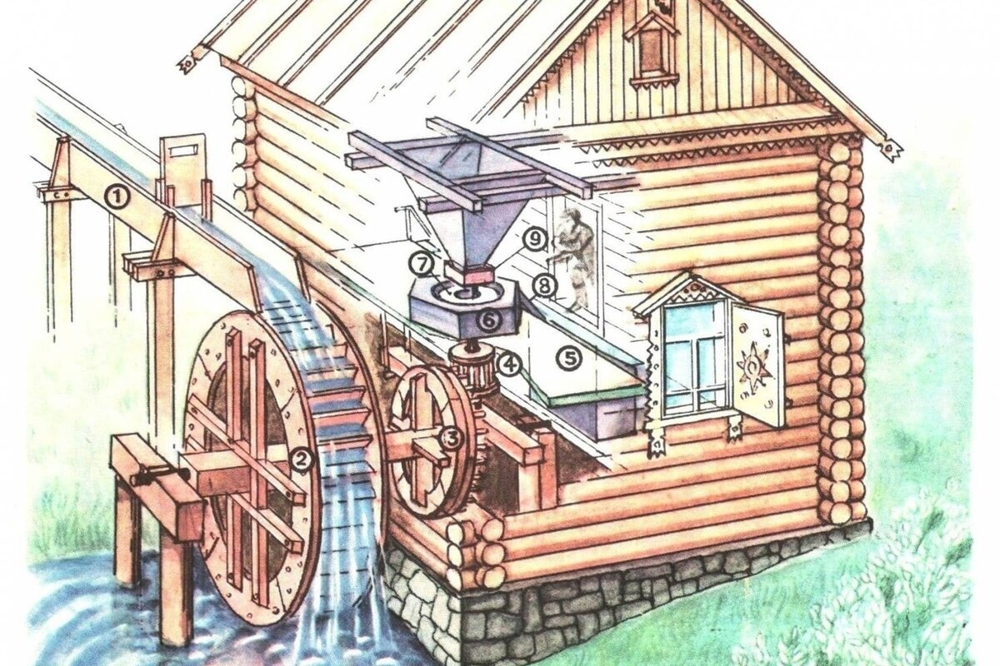

Технология является неотъемлемой частью современного общества, но корни технологических достижений можно проследить до древних времен. От изобретения колеса до появления Интернета эволюция технологий изменила наш образ жизни, работы и общения.
Ранние технологии, начиная с каменного века, включали изобретения для охоты и собирательства, такие как лук со стрелами и колесо. В бронзовом веке, около 3000 года до нашей эры, металлообработка позволила создавать прочные инструменты и оружие, а также способствовала развитию систем письма. В железном веке, начавшемся около 1200 года до нашей эры, широкое использование железных орудий труда и оружия способствовало строительству крупных сооружений, развитию транспорта и обмена товаров и идей на большие расстояния.
Средневековье стало периодом значительного технологического прогресса в Европе и исламском мире, где использование энергии воды и ветра в Европе способствовало развитию мукомольного и текстильного производства, а изобретение печатного станка Иоганном Гутенбергом в 15 веке революционизировало распространение знаний. В исламском мире ученые достигли выдающихся успехов в математике, астрономии и медицине, создав такие инструменты, как астролябия, использовавшаяся для навигации и астрономических наблюдений с 8 века, и внеся важный вклад в оптику, включая изобретение камеры-обскуры.
Промышленная революция конца 18 века, начавшаяся с изобретения Джеймсом Уаттом паровой машины в 1775 году, стала ключевым этапом в развитии технологий, что привело к созданию новых отраслей промышленности, таких как текстильная и металлургическая, а также к развитию транспорта. В 19 веке значительные достижения в коммуникационных технологиях, такие как телеграф, изобретенный в 1837 году, и телефон, созданный Александром Грэхемом Беллом в 1876 году, кардинально изменили способы передачи информации, позволив людям общаться на больших расстояниях с беспрецедентной скоростью и эффективностью.
21 век стал эпохой технологического прогресса, особенно в сферах искусственного интеллекта, робототехники и возобновляемых источников энергии, которые трансформируют промышленность и способы производства и использования энергии. Смартфоны изменили наше общение, работу и доступ к информации, а социальные сети изменили способы взаимодействия и обмена информацией. Технологии виртуальной и дополненной реальности открывают новые возможности для погружения в виртуальные среды и применения в образовании, здравоохранении и других отраслях, обещая революционные изменения.